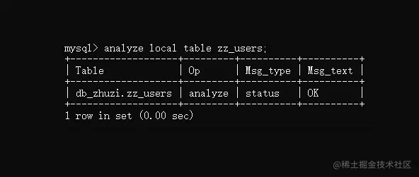

MYSQL命令
MySQL命令
一、基础操作与库命令
1.MySQL基础操作命令
net start mysql：Windows系统启动MySQL服务。
安装目录/mysql start：Linux系统启动MySQL服务。
shutdown：后面的start换成这个，表示关闭MySQL服务。restart：换成restart表示重启MySQL服务。
ps -ef | grep mysql：Linux查看MySQL后台进程的命令。
kill -9 MySQL进程ID：强杀MySQL服务的命令。
mysql -h地址 -p端口 -u账号 -p：客户端连接MySQL服务（需要二次输入密码）。
show status;：查看MySQL运行状态。
SHOW VARIABLES like %xxx%;：查看指定的系统变量。
show processlist;：查看当前库中正在运行的所有客户端连接/工作线程。
show status like "Threads%";：查看当前数据库的工作线程系统。
help data types;：查看当前版本MySQL支持的所有数据类型。
help xxx：查看MySQL的帮助信息。
quit：退出当前数据库连接。
2.MySQL库命令
show databases;：查看目前MySQL中拥有的所有库。
show engines;：查看当前数据库支持的所有存储引擎。
use 库名;：使用/进入指定的某个数据库。
show status;：查看当前数据库的状态信息。
show grants;：查看当前连接的权限信息。
show errors;：查看当前库中记录的错误信息。
show warnings：查看当前库抛出的所有警告信息。
show create database 库名;：查看创建某个库的SQL详细信息。
show create table 表名;：查看创建某张表的SQL详细信息。
show tables;：查看一个库中的所有表。
desc 表名;：查看一张表的字段结构。除开这种方式还有几种方式：
describe 表名;：查看一张表的字段结构。show columns from 表名;：查看一张表的字段结构。explain 表名;：查看一张表的字段结构。
create database 库名;：新建一个数据库，后面还可以指定编码格式和排序规则。
drop database 库名;：删除一个数据库。
ALTER DATABASE 库名 DEFAULT CHARACTER SET 编码格式 DEFAULT COLLATE 排序规则：修改数据库的编码格式、排序规则。
3.MySQL表命令
3.1 字段选项（可以不写，不选使用默认值）：
NULL：表示该字段可以为空。NOT NULL：表示改字段不允许为空。DEFAULT 默认值：插入数据时若未对该字段赋值，则使用这个默认值。AUTO_INCREMENT：是否将该字段声明为一个自增列。PRIMARY KEY：将当前字段声明为表的主键。UNIQUE KEY：为当前字段设置唯一约束，表示不允许重复。CHARACTER SET 编码格式：指定该字段的编码格式，如utf8。COLLATE 排序规则：指定该字段的排序规则（非数值类型生效）。COMMENT 字段描述：为当前字段添加备注信息，类似于代码中的注释。
表选项（可以不写，不选使用默认值）：
ENGINE = 存储引擎名称：指定表的存储引擎，如InnoDB、MyISAM等。CHARACTER SET = 编码格式：指定表的编码格式，未指定使用库的编码格式。COLLATE = 排序规则：指定表的排序规则，未指定则使用库的排序规则。ROW_FORMAT = 格式：指定存储行数据的格式，如Compact、Redundant、Dynamic....。AUTO_INCREMENT = n：设置自增列的步长，默认为1。DATA DIRECTORY = 目录：指定表文件的存储路径。INDEX DIRECTORY = 目录：指定索引文件的存储路径。PARTITION BY ...：表分区选项，后续讲《MySQL表分区》再细聊。COMMENT 表描述：表的注释信息，可以在这里添加一张表的备注。
3.2 表操作命令
show table status like 'zz_users'\G;：纵排输出一张表的状态信息。
alter table 表名 表选项;：修改一张表的结构，如alter table xxx engine=MyISAM。
rename table 表名 to 新表名;：修改一张表的表名。
alter table 表名 字段操作;：修改一张表的字段结构，操作如下：
add column 字段名 数据类型：向已有的表结构添加一个字段。add primary key(字段名)：将某个字段声明为主键。add foreing key 外键字段 表名.字段名：将一个字段设置为另一张表的外键。add unique 索引名(字段名)：为一个字段创建唯一索引。add index 索引名(字段名)：为一个字段创建普通索引。drop column 字段名：在已有的表结构中删除一个字段。modify column 字段名 字段选项：修改一个字段的字段选项。change column 字段名 新字段名：修改一个字段的字段名称。drop primary key：移除表中的主键。drop index 索引名：删除表中的一个索引。drop foreing key 外键：删除表中的一个外键。
drop table if exists 表名：如果一张表存在，则删除对应的表。
truncate table 表名：清空一张表的所有数据。
create table 表名 like 要复制的表名：复制一张表的结构，然后创建一张新表。
create table 表名 as select * from 要复制的表名：同时复制表结构和数据创建新表。
1.4、表的分析、检查、修复与优化操作
MySQL本身提供了一系列关于表的分析、检查与优化命令：
- ①分析表：分析表中键的分布，如主键、唯一键、外键等是否合理。
- ②检查表：检查表以及表的数据文件是否存在错误。
- ③修复表：当一个表的数据或结构文件损坏时，可以修复表结构（仅支持
MyISAM表）。 - ④优化表：消除
delete、update语句执行时造成的空间浪费。
分析表
语法如下：
sql |
其中的可选参数local、no_write_to_binlog代表是否将本条SQL记录进bin-log日志，默认情况下是记录的，加上这两个参数中的其中一个后则不会记录，执行效果如下：

如果Msg_text显示的是OK，则代表这张表的键不存在问题，存在问题的情况我这边就不模拟了，后面举例聊。
检查表
语法如下：
check table 表名1,表名2... [检查选项]; |
分析、检查、优化、修复的命令都支持同时操作多张表，不同的表之间只需用,逗号隔开即可。检查命令有多个可选项，如下：
quick：不扫描行数据，不检查链接错误，仅检查表结构是否有问题。fast：只检查表使用完成后，是否正确关闭了表文件的FD文件描述符。changed：从上述检查过的位置开始，只检查被更改的表数据。medium：检查行数据，收集每一行数据的键值（主键、外键…），并计算校验和，验证数据是否正确。extended：对每行数据的所有字段值进行检查，检查完成后可确保数据100%正确。
先来看看执行结果吧，如下：
这回的结果出现了些许不同，Msg_text中出现了一个Error信息，提示咱们检查的zz_u表不存在，而对于一张存在的zz_users表，则返回OK，表示没有任何问题。
当然，这里对于其他的检查选项就不做测试了，大家可以自行实验，比如把表的结构文件或数据文件，在本地打开手动删除前面的一点点数据，然后再执行检查命令，其实你也可以观察到，提示“数据不完整”的信息（但需要先停止运行
MySQL，并且用本地表测试，不要用线上表瞎搞）。
修复表
语法如下：
sql |
值得一提的是，修复表的命令不支持InnoDB引擎，仅支持MyISAM、CSV、引擎，比如基于InnoDB引擎的表执行修复命令时，提示如下：
上述Msg_text信息翻译过来的意思是：选择的表其引擎并不支持修复命令。
InnoDB引擎其实也有修复机制，可以在my.ini/my.conf文件中加一行配置：[mysqld]innodb_force_recovery = 1，这样在启动时会强制恢复InnoDB的数据。
上述这个修复机制默认是不开启的，因为InnoDB不需要这个恢复机制，毕竟之前在《引擎篇》中聊过：InnoDB有完善的事务和持久化机制，客户端提交的事务都会持久化到磁盘，除非你人为损坏InnoDB的数据文件，否则基本上不会出现InnoDB数据损坏的情况。
优化表
语法如下：
sql |
这里值得一提的是：此优化非彼优化，并不意味着你的表存在性能问题，执行后它会自动调优，而是指清除老数据，执行效果如下：
二、数据的导出、导入与备份、还原
-- --------使用 mysqldump 工具做数据的逻辑备份（导出的是sql语句）----------- |
三、表分区相关命令
-- 创建范围分区 |
 wechat
wechat alipay
alipay